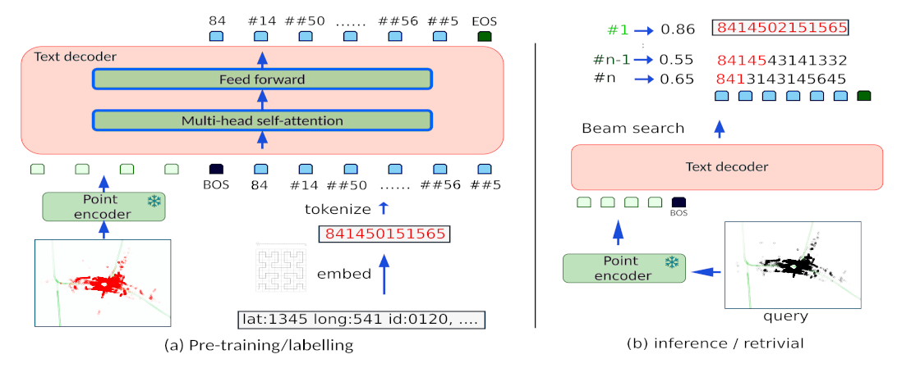
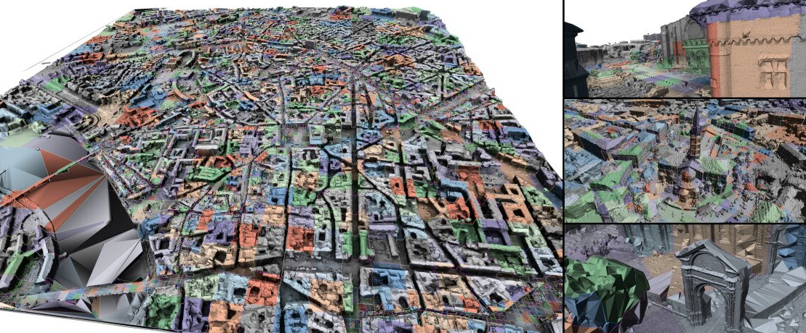
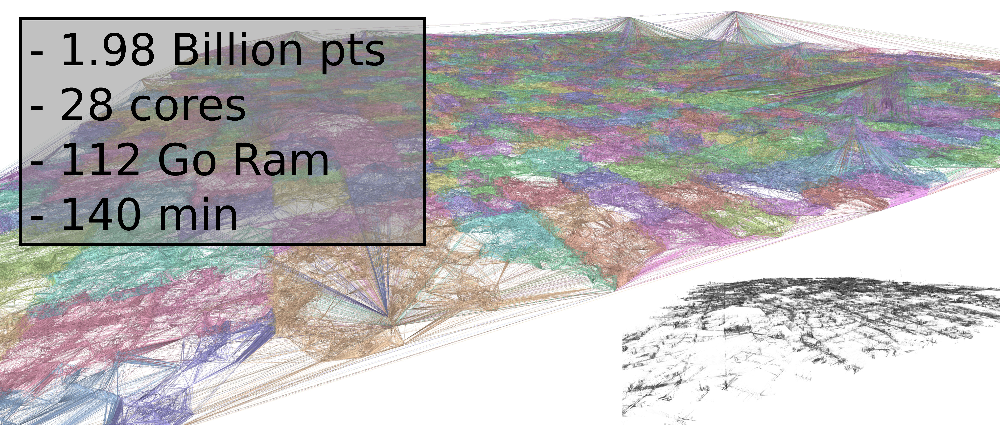
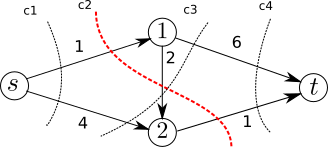
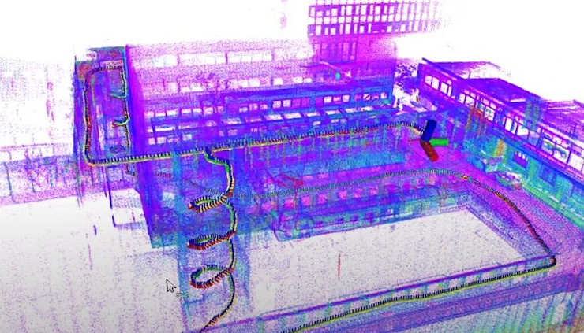
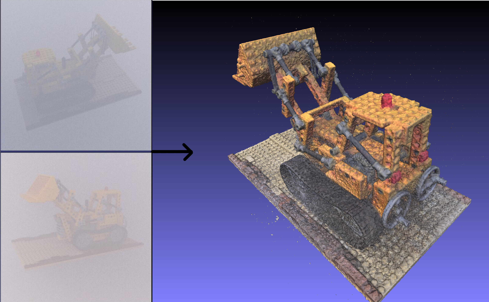
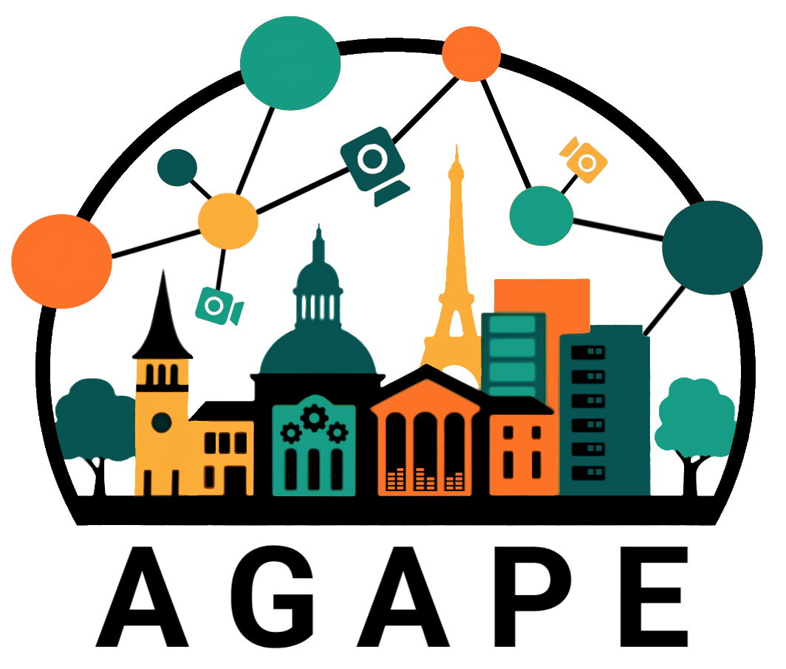

Laurent Caraffa
73 avenue de Paris · 94165 Saint-Mandé CEDEX · (+33)1 43 98 73 61 ·
laurent
.caraffa@ign.fr
Laurent Caraffa is a research scientist at the French Ministry of Ecological Transition, working at the LaSTIG laboratory of IGN (National Institute of Geographic and Forest Information) and Université Gustave Eiffel. His research focuses on large-scale 3D data processing, including large-scale surface reconstruction from point clouds and images, leveraging triangulated structures and implicit methods. His work also covers indexing and searching within point clouds for large-scale place recognition. He is currently co-supervising four PhD theses: A thesis co-funded by AID and IGN, in collaboration with Valérie Gouet-Brunet, focused on large-scale place recognition from point clouds. An industrial PhD funded by Criteo, also co-supervised with Valérie Gouet-Brunet, on implicit representations for 3D reconstruction. Two CIFRE PhD theses co-funded by Huawei, as part of the Urban Vision project under the “Impulsion” I-SITE Future call for projects, focused on 3D reconstruction using implicit representations in degraded conditions. He is also involved in the AGAPE project (AAPG ANR 2025-2028), where he is responsible for a task on indexing and content-based retrieval of 2D/3D objects. His research has led to several publications in top-tier conferences on Big Data and image processing, as well as the organization of various scientific events. Among them, the Big Data Day 2023 at IGN. Additionally, he is the co-founder of ExtraLabs, a company dedicated to developing a distributed computing and storage solution, synchronized via blockchain, for cooperative and distributed digital twins computation.
Laurent Caraffa est chargé de recherche du Ministère de la Transition Écologique, en poste dans la laboratoire LaSTIG de l’IGN (Institut national de l’information géographique et forestière) et de l’Université Gustave Eiffel. Il y mène des travaux sur la thématique du traitement à large échelle de données 3D comme la reconstruction de surfaces à large échelle à partir de nuages de points et d’images, en s’appuyant sur des structures triangulées et des méthodes implicites. Ses recherches portent également sur l’indexation et la recherche dans les nuages de points pour la localisation de lieux à large échelle. Il co-encadre actuellement quatre thèses : une thèse co-financée par l’AID et l’IGN, en collaboration avec Valérie Gouet-Brunet, portant sur la reconnaissance de lieux à grande échelle à partir de nuages de points ; une thèse industrielle financée par Criteo, également co-encadrée avec Valérie Gouet-Brunet, portant sur les représentations implicites pour la reconstruction 3D ; et deux thèses CIFRE cofinancées par Huawei, issues du projet Urban Vision sur l’appel à projet “impulsion” I-SITE Future, qui portent sur la reconstruction 3D par représentations implicites en conditions dégradées. Il participe au projet AGAPE (AAPG ANR 2025-2028) ou il est responsable d’une tâche sur l’indexation et la recherche par le contenu d'objets 2D/3D. L’ensemble de ces travaux ont donné lieu à plusieurs publications dans des conférences de rang A sur la thématique du Big Data ou du traitement d’image, ainsi qu'à l'organisation de divers événements scientifiques. Parmi eux, la Journée Big Data 2023 à l’IGN. Par ailleurs, il est cofondateur de la société ExtraLabs, dont l’objectif est de développer une solution de calcul et de stockage distribué, synchronisée par blockchain, pour le calcul de jumeaux numériques coopératifs et distribués.
Research Interests
Sujets de recherche




3D Mapping
3D Mapping

Photogrammetry in bad weather condition
Photogrammétrie en conditions dégradées
Main Publications
Complet list : Liste complète : https://cv.archives-ouvertes.fr/laurent-caraffa/
[ACL] Journals
[ACLN] Journals
[ASCL] Others
[ACTI] Conferences
[ACTN] Conferences
[COM] Conferences
[OS] Books and Chapters
[DO] Books and Chapters
[AFF] Posters
[AP] Preprints
[TH] Dissertations
[INV] Invited Talks
[PV] Popularization
Projects
Projets
On-going and past research projects
Projets en cours et passés

AGAPE
discoverAbility and investiGation in spAtial iconograPhic hEritage
Découverte et investigation dans le patrimoine iconographique spatialisé
 ANR AAPG
2025-2028
ANR AAPG
2025-2028
Urban Vision
Virtual reality in urban environnement.
Réalitée virtuelle en environnement urbain.
 "ISIT FUTURE"
2018-2022
"ISIT FUTURE"
2018-2022
AI4GEO
Artificial Intelligence for geospatial data Intelligence artificielle pour les données géospatiales  PIA
PIA
BIOM
Building Inside/Outside Modeling.
Modélisation intérieur/extérieur de bâtiments.

 AAPG 2018-2021
AAPG 2018-2021
Supervisions
PhDs
Thèses
-
Hiba Dahmani
[2023 - ]
Phd supervisor : Roland Brémond. co-supervised with Nathan Piasco (Huawei), Luis Roldão (Huawei), Moussab Bennehar (Huawei)
Directeur de thèse : Roland Brémond. co-supervisée avec Nathan Piasco (Huawei), Luis Roldão (Huawei), Moussab Bennehar (Huawei)
Large Urban scene Generation (LaSTIG/UGE/Huawei) Generation de scenes urbaines larges (LaSTIG/UGE/Huawei) -
Thang Anh Quan NGUYEN
[2024 - ]
Phd supervisor : Roland Brémond. co-supervised with Nathan Piasco (Huawei), Luis Roldão (Huawei), Moussab Bennehar (Huawei)
Directeur de thèse : Brémond. co-supervisée avec Nathan Piasco (Huawei), Luis Roldão (Huawei), Moussab Bennehar (Huawei)
Multi-view image processing in degraded outdoor conditions with NeRF (LaSTIG/UGE/Huawei) Reconstruction 3D multi-vues en conditions dégradés par approche NeRF (LaSTIG/UGE/Huawei) -
Karim Kassab
[2023 - ]
Phd supervisor : Valérie Gouet-Brunet. co-supervised with Jérémie Mary (Criteo) and Jean-Yves Franceschi (Criteo),
Directeur de thèse : Valérie Gouet-Brunet. co-supervisée avec Jérémie Mary (Criteo) et Jean-Yves Franceschi (Criteo),
Neural 3D implicit modeling (IGN/Critéo) représentations 3D implicite par méthodes neuronales. -
Chahine-Nicolas Zede
[2023 - ]
Phd supervisor : Valérie Gouet-Brunet.
Directeur de thèse : Valérie Gouet-Brunet.
point cloud based large-scale place recognition (DGA/IGN) Reconstruction de surface large echelle. -
Yanis Marchand
[2020 - 2023]
Phd supervisor : Bruno Vallet.
Directeur de thèse : Bruno Vallet.
Large scale surface reconstruction. Reconstruction de surface large echelle. -
Stéphane Guinard
[2017-2020]
Phd supervisor : Bruno Vallet, co-supervised with Loïc Landrieu (STRUDEL, LASTIG, IGN).
Directeur de thèse : Bruno Vallet, co-supervisée avec Loïc Landrieu (LASTIG/STRUDEL, IGN).
Simplicial complexes reconstruction. (DGA/IGN) Reconstruction de complexes simpliciaux. (DGA/IGN)
Research Engineer
-
Mahmoud Boubaker
[2022 - ]
Urban Vision project, 3D Lidar Aquisition and 3D reconstruction from images. Projet Urban Vision, reconstruciton 3D à partir de lidar terrestre couplée à de la photogrammétrie. -
Florent Genier
[2022 - ]
3D data processing, surface reconstruction, cloud computing. Traitement de données 3D, recontruction de surface, cloud computing.
Post docs
-
Pierre Rolin
[2017 - 2018]
advised by
co-encadré par
Cyrielle Guérin
Watertight surface reconstruction from satellite imagery. Reconstruction de surfaces étanches à partir de données satellite. -
Murat Yirci
[2017 - 2018]
co-advised by
co-encadré par
Mathieu Brédif
Distributed Delaunay Triangulation. Calcul de triangulation distribuée.
Internships
Stages
-
Aitor Lopez
[2024]
Integrating 3D indexing for Apache Sedona Indexation 3D dans Apache Sedona
-
Antonin Ollier
[2024]
Production deployment of the Sparkling Wasure code. Mise en production du code Sparkling Wasure.
-
Sebastien campagne
[2022/03 - 2022/04]
Pseudo-boolean optimization : state of the art and computer vision applications. Optimisation de fonctions pseudo-booléennes : état de l'art et applications en vision par ordinateur.
Miscellaneous
Divers
Experience
-
2010-2013
PhD student
Doctorant
PhD on stereoreconstruction under bad weather conditions.
Thèse portant sur la reconstruction à partir de paires stéréoscopiques en conditions dégradées.
-
2014-2016
PostDoc
Post Doctorat
After my PhD, I did a 2 years post-doc at IGN France on surface reconstruction.
Après ma thèse, j'ai effectué un post-doc à l'IGN sur la problématique de reconstruction de surface.
-
2016-
Permanent researcher
Chargé de recherche
permanent researcher at IGN France on photogrammetry and big data.
Chargé de recherche à l'IGN en photogrammetrie et Big-data.